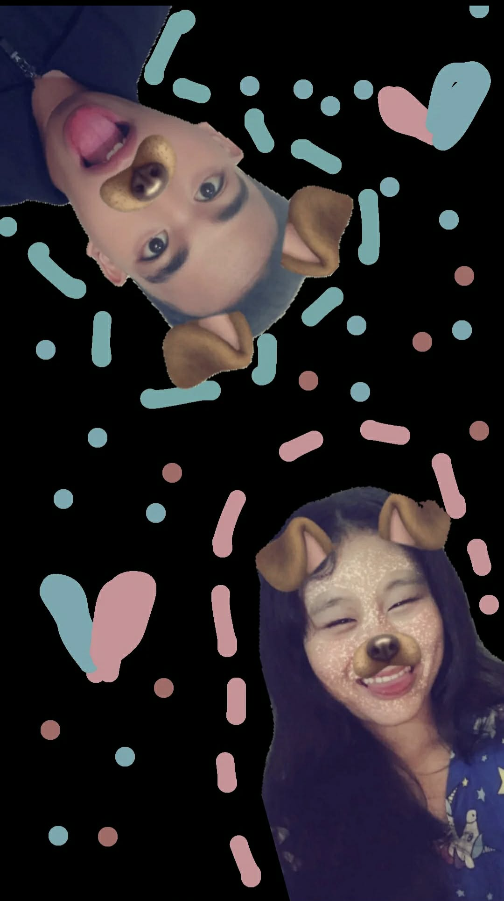
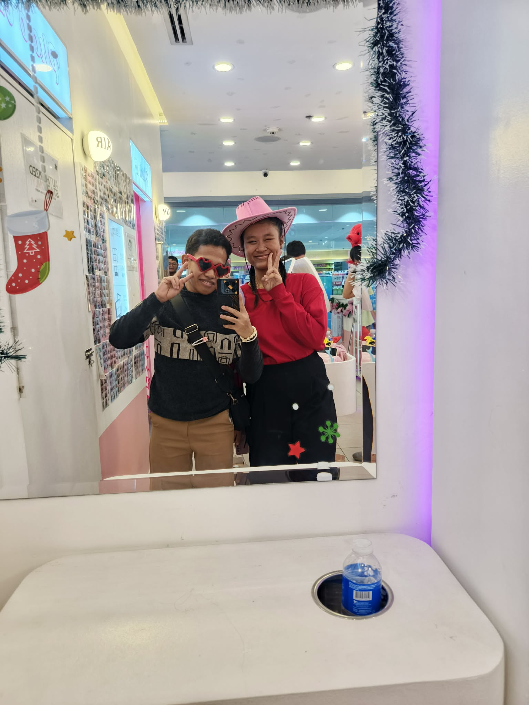
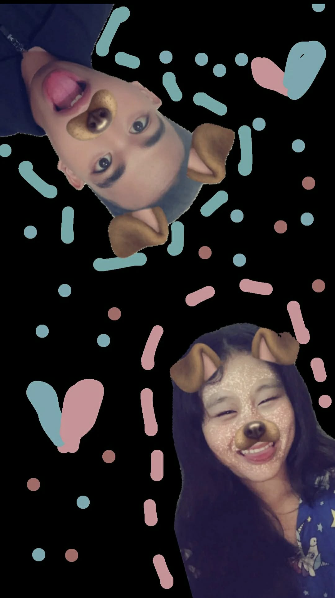
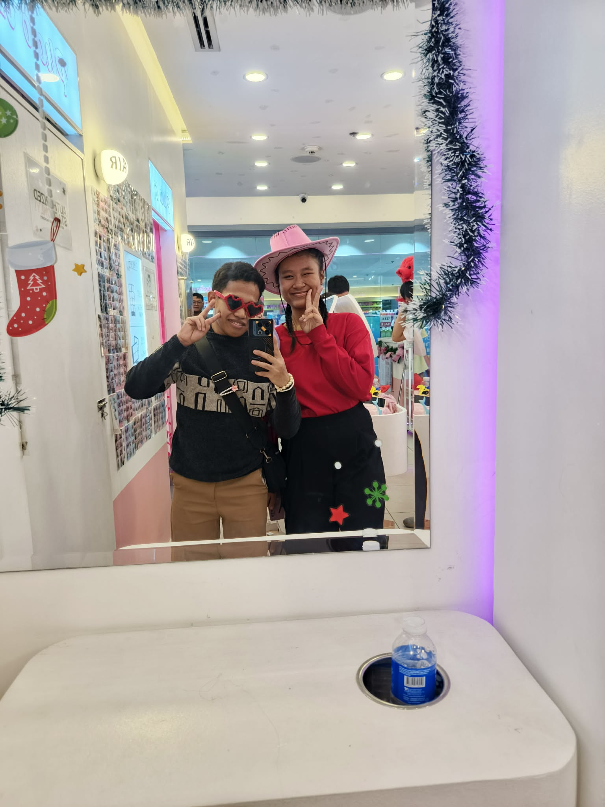

Happy Valentine’s Day 💗
Hi babiii. I hope you’re doing okay today. Kahit hindi tayo magkasama
ngayon, gusto ko lang sabihin sa’yo na hindi nagbabago yung
nararamdaman ko.
Distance doesn’t lessen what I feel for you — if anything, it makes me
appreciate you even more. Alam ko malayo tayo sa isa’t isa, pero hindi
kailanman nabawasan yung love ko.
Hindi siya seasonal, hindi siya depende sa araw, at lalong hindi siya
natitinag ng layo.
Nandito lang ako, steady, choosing you every single day. Miss na miss
na kita — yung presence mo, yung boses mo, yung simpleng “kumain ka na
ba?” mo.
Pero kahit miss kita, panatag ako kasi alam kong tayo pa
rin. I can’t wait sa araw na magkikita tayo ulit.
Pero habang hinihintay natin ‘yon, mahal kita — consistently,
sincerely, at walang pag-aalinlangan. Love you always. 🤍
Caught in our little world of love.

 


